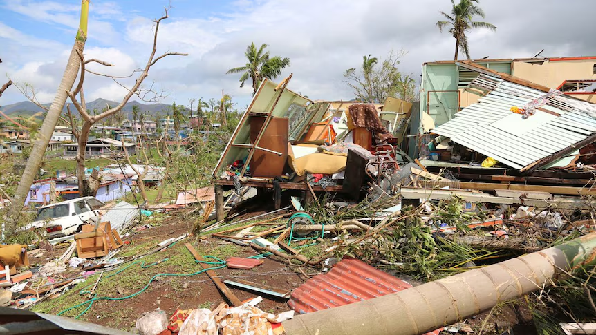

Farichuuk Island, January 28, 2025 – The residents of Farichuuk woke up to devastating scenes as heavy winds, reaching speeds of up to 120 km/h, swept across the island last night. The severe weather, part of an unexpected tropical disturbance, caused significant damage to homes, infrastructure, and vital resources, but local authorities have assured that recovery efforts are already in full swing.